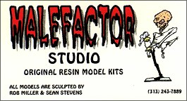

Model: Rez Bannon
Scale: 1/10 (6 1/2 inches tall)
Material: Resin
Retail Price: $30 (plus $5 shipping)
Produced by: Malefactor Studio
Reviewer: Denis Bohm
(denis_bohm@fireflydesign.com)

 alefactor Studio
blasts into the garage kit scene with their first release Rez Bannon!
alefactor Studio
blasts into the garage kit scene with their first release Rez Bannon!
It's the classic garage kit tale: sculptor does some pieces for fun, friends encourage him to make kits, a new kit company is born, and kit builders rejoice!
I think the sculpting on this piece is great! The likeness is there and the pose and expression really come across. The base, which is a pile of bullet cases, is imaginative and adds a lot to the kit. Even the shirt style is right.
The kit comes in a box with a photo of the finished kit on the cover. Inside the box the kit is well protected with foam packing. Also included are "D-Structions" that walk you through the basics of putting together a resin kit. Finally, there is a reader response card! Very few kit companies include these and I applaud those that do. Anything that encourages people to contact kit companies directly with their comments will help out both the kit builder and the kit company.
Rez comes in five white resin parts: left hand and gun, right hand and gun, head, body, and base. The parts were obviously planned out so that they could all be painted separately and then assembled after painting. Thank you Malefactor Studio!
The mold seams were pretty minor and were cleaned up by scraping an X-Acto blade over the seam perpendicular to the surface. Then a quick pass with fine sandpaper finished them up. There is a large round plug on the lower back of the head and on the back of one hand. I sawed them off with an X-Acto saw, then used a medium file to remove the remaining excess resin and make the area even with the surrounding surface. Sandpaper was then used to finish smoothing out the area. Since these areas don't have a texture to them this was a pretty simple process.
A couple of areas had small surface air bubbles. There were also some medium sized air bubbles on the back of the head where the plug was removed. To fix up these areas I mixed Squadron White Putty with a bit of Acetone (nail polish remover is mostly Acetone and works fine). Then I used a Q-Tip to swab this thinned putty into the small holes and to build up some putty over the areas. Next with a clean Q-Tip dipped in Acetone I smoothed out the putty. A little sanding later and no more air bubbles.
I always pin my kits and this one was no exception. I snipped some wire from a metal coat hanger to make the pins. Then I put a drip of paint in the center of two parts that will be joined and touch them together. The paint then indicates where to drill. I drill a slightly larger hole than the size of the rod so I can adjust things a bit. Rods are then glued into the hands, head, and feet. Finally, I drilled holes into a block of wood and inserted the parts with the rods into the holes to support them while I prime and paint.
Now Rez is ready to paint! I'll have my build up in the gallery soon...
In conclusion, this is a great first release and at an excellent price. Let's just hope that they turn this kit into a complete lineup!
You can order Rez Bannon from:
|
 |
Malefactor Studio 1036 Maple Blvd. Monroe, MI 48162 Phone: (313) 243-7889 E-mail: race@tdi.net |
The Gremlins in the Garage webzine is a production of Firefly Design. If you have any questions or comments please get in touch.
Copyright © 1994-1997 Firefly Design.